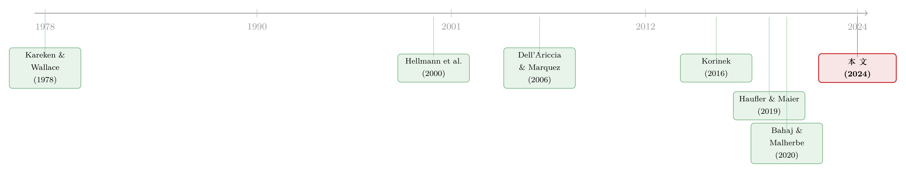

加一道资本要求，钱是流进来还是流出去？——东道国规则下，监管者们在抢同一块「股本」
本文读的是 Bahaj & Malherbe (2024, Journal of Financial Economics)：在「东道国规则」下，一国调高银行资本要求，引发的既可能是银行股本的流出，也可能是流入——方向取决于这一调整让本国银行的股本回报率（ROE）上升还是下降。而正是这个流向，决定了各国监管者在博弈中会「向上赛跑」还是「向下赛跑」：好时光里把逆周期资本缓冲（CCyB）抬得过高，坏时光里又砍得过狠。
1 一个被普遍相信、却可能是错的「常识」
先从一个几乎人人都信的直觉说起。
监管者把一个国家的银行资本要求调高，会发生什么？标准答案脱口而出：本国银行融资成本上升、竞争力受损、放贷收缩，资本会从这个「管得更严」的国家流出去，跑到监管更宽松的地方。监管套利嘛，水往低处流。各国央行行长、监管文件里反复表达的「跨境溢出」担忧，背后正是这套逻辑——担心提高本国要求会削弱本国金融体系的竞争力（Osborne, 2015），担心本国银行收缩海外敞口、连累别国（de Guindos, 2019），甚至担心风险转移活动外迁（ESRB, 2018）。
这套逻辑听上去无懈可击。但本文两位作者——伦敦大学学院 / 英格兰银行的 Saleem Bahaj 与 Frederic Malherbe——告诉你：它可能是反的。提高资本要求，照样可以把资本「吸」进来；而真正驱动各国监管博弈的，也根本不是大家以为的那个东西。
要看清这一点，得先弄明白一件很多人没在意的事：现在的国际监管规则，到底是按什么来设的。
2 「东道国规则」：钱跟着借款人走，而不是跟着银行走
这里有一个关键的制度区分。
过去文献研究的大多是 母国规则（home-country rule）：一家银行的资本要求，由它的注册地监管者决定，不管它在哪儿放贷。在这种规则下，监管者要是给本国银行降一档要求，本国银行就能以更低的成本在所有市场上抢生意——于是各国有动机互相「拆台」(undercut)，靠压低要求帮自家银行抢市场份额。这就是经典的 Dell'Ariccia & Marquez (2006) 笔下的 市场份额外部性（market-share externality）。
但 Basel III 下真正落地的逆周期资本缓冲 (Counter-Cyclical Capital Buffer, CCyB)，走的是另一条路——东道国规则（host-country rule）：资本要求由放贷发生地的监管者设定，取决于借款人在哪里，而不是银行在哪里。一笔在本国发放的贷款，无论放贷的是本国银行还是外国银行，都得满足本国监管者设的那一档要求。
这个看似技术性的区别，把整个博弈的性质换掉了。
一句话抓住差异：母国规则下，监管者用「降要求」帮本国银行去别人的市场抢份额；东道国规则下，谁都没法靠这招占便宜——因为要求绑在「地盘」上，不绑在「银行」上。那监管者还在争什么？答案是：争稀缺的银行股本（bank equity capital）。
接着，一个自然的问题是：既然东道国规则把市场份额这条线掐断了，那提高一国资本要求，凭什么还会引发跨境资本流动？
3 模型：两个国家，一池子稀缺的股本
本文用一个干净的两期、两国一般均衡模型把机制讲透。我把设定一步步铺开。
时间与国家。 模型有两个日期：0 和 1。决策在日期 0 做出；到日期 1，所有随机变量实现，生产与消费发生。有两个主权国家：本国（Home）与外国（Foreign），外国变量加一撇 ′。每国有一个代表性企业、家庭、投资者和监管者，外加一批可以在两国经营的银行。
生产技术。 代表性企业用 Cobb–Douglas 技术生产：
$$ Y = A\,k^{\alpha}\,l^{1-\alpha}, \qquad 0<\alpha<1 $$
其中 \(k\) 是物质资本、\(l\) 是劳动、\(A\ge 0\) 是刻画全要素生产率（TFP）的随机变量，标准化 \(\mathbb{E}[A]=1\)。企业一文不名，靠向银行借钱来投资。一个关键的均衡价格是：贷款的总利率（gross loan rate）随总放贷量递减——
$$ \text{loan gross rate} = A\,\alpha\,X^{\alpha-1} $$
这里 \(X\) 是总放贷量。\(\alpha-1<0\)，所以放得越多、边际回报越低。这条向下倾斜的信贷需求，是后面一切「驼峰」的根源。
银行与资本要求。 银行起步也没钱，靠发行股本（受有限责任保护）和吸收有存款保险的存款来放贷。本国监管者设要求 \(\gamma\in(0,1)\)，外国设 \(\gamma'\in(0,1)\)。对任一银行 \(i\)，记它在本国、外国的放贷量为 \(x_i,\,x_i'\)，股本为 \(n_i\)，则它面对的约束是：
$$ n_i \ge \gamma\,x_i + \gamma'\,x_i' \tag{1} $$
注意 \(\gamma\) 乘的是 \(x_i\)（本国放贷），\(\gamma'\) 乘的是 \(x_i'\)（外国放贷）——这正是东道国规则的数学写照：每笔贷款按它发放地的要求计提资本。
股本是稀缺的——而且供给上斜。 这是全文的命门。很多文献（包括 Dell'Ariccia & Marquez (2006)）图省事，假设股本供给是固定的。但本文沿用 Hellmann, Murdock & Stiglitz (2000) 的思路，假设一条上斜的全球股本供给曲线：只有「投资者」能买银行股本，他们生成 \(m\) 单位财富要付出 \(m(1+z)\) 的负效用，其中
$$ z \equiv \frac{\kappa}{2}M^{2}, \tag{2} $$
$$ M \equiv \begin{cases} 0 & N+N'\le \omega \\[2pt] N+N'-\omega & N+N'>\omega \end{cases} $$
\(N+N'\) 是全球投进银行股本的总量，\(\omega\) 是投资者的初始财富禀赋，\(\kappa>0\)。直觉很简单：全球想动用的银行股本越多（\(M\) 越大），再多筹一块钱的成本就越高。作者还限制 \(\omega\) 不能太大，以排除「股本完全充裕」这种无趣的情形——也就是说，股本真的稀缺。
「股本固定」还是「股本上斜且稀缺」，看似只是建模口味，实则决定成败。正因为供给上斜、且全球共用一条曲线，本国多筹的股本才会沿着这条曲线把外国银行的剩余供给曲线往里推——一国的动作，才会外溢成另一国的成本。这一点，下一节就是全部。
银行会专业化。 模型有个干净的引理（Lemma 1）：均衡里 (i) 银行以正概率违约；(ii) 资本要求约束绑定（binding）；(iii) 每家银行只在一个国家放贷——要么是「本国银行」，要么是「外国银行」。为什么专业化？因为存款保险给了银行一个写在净值上的看跌期权（Merton, 1977），而这个期权的价值在「所有贷款在同一个坏状态里一起亏」时最大化（Harris et al., 2023）。分散反而会削弱这份政府担保的补贴。于是银行自发地只押一个国家。
至此，分析的核心对象浮出水面：\(N\)——配置给「在本国放贷」的银行的股本总量。\(\gamma\) 一变，股本就在本国 \(N\) 与外国 \(N'\) 之间重新分配——这,就是一次银行股本的跨境流动。
4 真正关键的一步：资本流向 = ROE 的方向
现在来到全文的「文眼」。
先看单一国家的视角。假设本国银行股本暂时固定，监管者调高 \(\gamma\)，放贷被压缩、边际回报抬升。这里出现一个驼峰：
- 如果初始放贷量较高（已经过了垄断者会选的那个产量），那么减少放贷反而提高利润——就像一家产品市场里的厂商通过减产来抬价；
- 如果初始放贷量较低，再减产只会损失利润——就像合谋厂商把产量压过了头。
于是，本国银行的利润、进而 股本回报率（return on equity, ROE），关于放贷量、进而关于资本要求 \(\gamma\)，是驼峰形的。存在一个「回报最大化」的要求水平：低于它，调高 \(\gamma\) 会抬高 ROE；高于它，调高 \(\gamma\) 会压低 ROE。
接着把视角拉到跨境。银行在全球股本市场上竞争性融资，均衡里各国银行的 ROE 必须相等（都等于筹股本的边际成本）。那么——
想象一次本国的 \(\gamma\) 调整抬高了本国银行 ROE。本国银行于是想多筹股本，沿着全球供给曲线往上挪一格。结果外国银行面对的剩余供给曲线向内收缩，外国的股本成本被抬高、放贷收缩。本国的股本，部分是从外国「虹吸」过来的。
反过来，如果调整压低了本国 ROE，股本就从本国流向外国，外国反而受益。
这就是本文最反直觉、也最漂亮的命题：提高资本要求，引发的是流入还是流出，取决于它让本国 ROE 上升还是下降；而这又取决于初始要求是在驼峰的左侧还是右侧。 一个极端情形能帮你拿稳直觉：若全球股本总量固定，本国流入多少，外国就必然流出多少，是 100% 的溢出；若全球供给完全富有弹性，本国增加的全是新筹的股本，溢出为零。现实落在两者之间。
把这个机制写成一行，就是论文的 Lemma 2（式 6）。它说，均衡股本 \(N^*\) 对 \(\gamma\) 的全导数，等于 ROE 对 \(\gamma\) 的偏导，乘上一个恒正的标量：
因为 \(\xi^*>0\)，所以 \(\dfrac{dN^*}{d\gamma}\) 的符号完全由 \(R_\gamma\) 决定。一个偏导数的正负，就把「钱是进是出」这件看似要靠制度细节、监管套利来争论的事，干净利落地钉死了。这是把一个含糊的政策直觉，化成一句可判定的数学命题——也是本文相对于「水往低处流」式叙事的真正升级。
5 从机制到博弈：向上赛跑，还是向下赛跑？
刻画完「给定要求下的流向」，作者接着把要求本身内生化，让两国监管者下一盘棋。
监管者的目标是最大化净产出，扣除金融不稳定带来的无谓损失。银行股本因为能缓解这类损失而具有社会价值；但银行天性偏好最大杠杆，所以需要资本监管来纠偏。关键在于：监管有跨境效应，而 Nash 竞争下的监管者只顾自己、无视外溢。
于是逻辑链条闭合了：
- 当一国收紧要求会吸引股本（驼峰左侧，\(R_\gamma>0\)），它就把别国的股本虹吸过来——负外部性，收紧的部分成本由外国承担。此时各国有动机向上偏离协作最优，race-to-the-top（向上赛跑）。
- 当一国放松要求会吸引股本（驼峰右侧），各国就有动机互相拆台、竞相放松——race-to-the-bottom（向下赛跑）。
哪种情形出现，取决于股本是丰是缺：
- 股本充裕（正常 / 好时光）：协作能在相对高的放贷水平上，用相对紧的要求兼顾金融稳定。高放贷意味着落在「收紧抬高 ROE」的驼峰左侧 → 收紧引发流入 → 向上偏离 → race-to-the-top。结论：竞争中的监管者会把 CCyB 抬得过高。
- 股本稀缺（坏 / 紧张时光，比如一次对银行股本的大负向冲击之后）：放贷水平低，落在驼峰右侧 → 放松引发流入 → 互相拆台 → race-to-the-bottom。结论：竞争中的监管者会把 CCyB 砍得过狠。
这给 Basel III 的逆周期缓冲泼了一盆冷水：CCyB 的设计初衷是「好时光多攒、坏时光释放」。但本文说，在缺乏协调的东道国规则下，无协作的 Nash 均衡会把这套机制用力过猛——好时光攒得过多、坏时光放得过多。更糟的是，福利函数里给金融稳定的权重越大，协作放贷水平越低、越容易落进 race-to-the-bottom 的区域；也就是说，一次抬高金融不稳定潜在成本的负向冲击（如财政空间受损），恰恰让向下赛跑更可能发生——监管在最该稳住的时候反而最容易松手。
这里有意思的一点：作者特意指出，经验文献普遍发现银行在多数时候通过部分增发股本来应对更高的资本要求（而非单纯缩表）。在本文模型里，这种「增发为主」的反应当且仅当更高要求引发资本流入时才出现——于是「增发为主的正常时期」恰好对应「股本不太稀缺、放贷高于使投资者收入最大化的水平」的那一侧。模型的内生预测，和数据里观察到的银行行为对上了号。
（关于「规则 vs 相机抉择」如何约束资本监管者本身的时间不一致，可参见《规则还是相机抉择？——给银行资本监管装上一根「承诺」的缰绳》；而不同国家银行对同一冲击的异质反应，则可对照《同样的加息，为什么德国的银行和西班牙的银行走向相反？》。)
6 文献脉络
把这条线索捋一捋，能看清本文站在哪儿。
最早的根，是 Kareken & Wallace (1978) 关于存款保险与道德风险的经典——政府担保扭曲银行行为，是后来一切「为什么需要资本监管」的起点。本文里银行的专业化、约束绑定，都从这粒种子长出来。
真正的「参照系」是 Dell'Ariccia & Marquez (2006)：他们在母国规则下研究监管者竞争，核心是市场份额外部性——降要求让本国银行在两国市场都更便宜，从而抢份额，于是各国有拆台动机。本文明确地与它对话：换成东道国规则，市场份额这条外部性被掐断，真正剩下的是争夺股本这条全新的外部性。一进一出，问题被重置。
中间这条线还包括两支。一支研究监管 / 监督协调：Acharya (2003) 看处置机制的相机抉择如何侵蚀协调收益，Morrison & White (2009) 看监管能力的选择效应，Carletti et al. (2020)、Calzolari et al. (2018) 看跨境银行如何改变监管激励。另一支更靠近本文的「赛跑」语言：Haufler & Maier (2019) 给出资本标准上的「向上赛跑」结果。再往上一层，Korinek (2016) 给出国际政策协调何时有空间的一般性条件——本文恰好踩在他点名的 Tinbergen 原则被违背之处：监管者只有一件工具（资本要求），却要同时应对经济活动与金融稳定的权衡。
而本文作者自己的前作 Bahaj & Malherbe (2020)（「强制安全效应」）与 Malherbe (2020)（跨周期最优资本要求），提供了「更高要求未必减少放贷」「要求应随周期变动」这两块直接的积木。本文把它们搬到两国博弈的舞台上，得到了 race-to-the-top / race-to-the-bottom 随周期切换的新结论。

7 评论与延伸（Q&A + 研究方向）
(a) 几个可能的疑问
Q：东道国规则真的把「市场份额竞争」完全消掉了吗？为什么？
是的，在本文设定里是干净消掉的。因为要求按放贷地计提（式 1 中 \(\gamma\) 绑 \(x_i\)、\(\gamma'\) 绑 \(x_i'\)），无论哪国银行在本国放贷，都吃同一档 \(\gamma\)，没人能靠「我注册地的要求低」在别人的地盘上取得成本优势。再加上存款零利率、无公司税、股本市场全球化，银行连「在哪儿注册」都无所谓了——竞争维度只剩「争股本」。
Q：提高要求反而吸引资本，这是不是太反直觉、太依赖模型假设了？
直觉其实不玄：它就是「减产抬价」的厂商逻辑搬到银行业。当放贷量已经偏高（驼峰左侧），收紧要求压缩放贷、抬高贷款边际回报，从而抬高 ROE，股本自然被吸过来。真正不可或缺的假设是股本供给上斜且稀缺（式 2）——若供给固定或完全弹性，机制要么退化、要么消失。这恰是本文区别于「股本固定」类模型的地方。
Q：「股本流动」在现实里对应什么？是真的有钱跨境搬家吗？
作者给了两种等价解读：一种是代表性本国银行「长大」、外国银行「缩小」；另一种是通过进入 / 退出——银行退出外国信贷市场、进入本国市场。由于自由进入、完全竞争、无固定成本，两种解读都成立。也可以理解为银行控股公司在母国筹股本，再通过内部资本市场配给各国子公司。
Q：为什么银行一定会「专业化」只在一国放贷，而不是分散？
因为存款保险是一份写在净值上的看跌期权，它的价值在「所有贷款在同一坏状态一起亏」时最大。分散会让某些状态下一部分贷款还在赚钱，反而削弱了这份政府补贴。所以在均衡里，最大化担保价值 = 不分散，银行自发专业化（Lemma 1、Harris et al., 2023）。
Q：这套结论对 Basel III 的 CCyB 到底意味着什么？
它说，在东道国规则、缺乏协调的现实下，无协作均衡会系统性地用力过猛：正常时期（股本不太缺）race-to-the-top，CCyB 抬得过高；紧张时期（股本很缺）race-to-the-bottom，CCyB 砍得过狠。而且负向冲击会把体系推向「向下赛跑」那一侧——监管在最需要审慎的时刻最容易松手。这为「CCyB 需要国际协调 / 互认」提供了一个正式的福利论据。
Q：模型预测能和数据对上吗？
能对上一条重要的定性事实：经验文献普遍发现银行多数时候靠部分增发股本（而非单纯缩表）来应对更高要求。本文模型里，这种反应当且仅当更高要求带来资本流入时发生——也就对应「正常时期、股本不太稀缺」。这让「正常时期 = 驼峰左侧」的刻画有了经验落点（作者在第 5 节讨论）。
(b) 几个可能的研究问题与提案
1. 把「东道国规则」的流向预测拿到数据里检验。 【经济故事】本文给出一个可证伪的命题：在 CCyB 上调的事件里，目标国银行的股本应当（在「正常时期」）出现净流入而非流出，且方向与该国放贷相对水平相关。 【可行性】中。可用 BIS 的国际银行业统计 + 各国 CCyB 调整时点（ESRB 有完整记录）做事件研究 / 面板，识别难点在于把「股本流向」与「资产缩表」分开、并处理同期多国政策。数据齐全，识别要靠 CCyB 调整的相对外生性与跨国差异。
2. 把机制搬到公司债 / 信用市场：监管收紧时，外资持有人是谁在接盘？ 【经济故事】若银行因东道国要求收缩某国信贷，谁来填补？很可能是直接放贷机构与债券投资者。本文的「股本虹吸」在中介间也许有对应物——监管收紧把一类中介的资本挤出，另一类（外资、非银）顶上。 【可行性】中。可结合本博客关注的方向，用公司债持有人层面数据（如机构持仓）+ 银行资本要求冲击做交叉。识别需要一个干净的、只打银行不打非银的资本要求冲击。
3. 引入风险加权与资产端再平衡，看流向结论是否稳健。 【经济故事】本文是单一资本类型、约束线性。现实中 CCyB 与风险权重交织，银行会在资产端再平衡（Juelsrud & Wold, 2020）。加入风险加权后，驼峰的左右侧划分会移动，race-to-top / bottom 的临界条件可能改变。 【可行性】高（理论扩展）。在本文框架里加一层风险权重是直接的；难点是保持可解性。纯理论，doable。
4. 福利量化：协调能挽回多少？ 【经济故事】本文给出了 Nash 与协作的定性对比，但没说「偏离有多贵」。把模型校准到几个主要辖区的股本稀缺度与金融稳定权重，能算出 race-to-the-top/bottom 的福利损失量级，为「监管互认」的价值定价。 【可行性】中。需要校准 \(\kappa\)（供给斜率）、\(\omega\)（股本禀赋）、稳定权重等参数，数据上可借助银行股本成本与历史 CCyB 数据。识别参数是主要门槛。
8 我的判断
贡献。 这篇文章最漂亮的地方，是把一个被反复念叨却从未被讲清的政策直觉——「提高资本要求会不会把银行赶走」——重置到了正确的制度前提（东道国规则）上，并用一个偏导数的符号 \(R_\gamma\) 把答案钉死。它告诉你：在 CCyB 这种「按地盘计提」的规则下，监管者争的不是市场份额，而是稀缺的股本；流向的正负、进而 race-to-the-top 还是 race-to-the-bottom，全系于本国银行 ROE 关于要求的那条驼峰曲线落在哪一侧。这是一个干净、可证伪、且与现实 Basel III 机制严丝合缝的理论贡献。
对识别（在这里是「对建模」）的担忧。 我有两点保留。其一，结论高度依赖股本供给上斜且稀缺与银行完全专业化这两条假设。专业化让模型可解，但现实中跨境分散的大银行恰恰是监管最头疼的对象——一旦允许部分分散，「股本虹吸」的强度会被稀释，驼峰逻辑也会变形。其二，模型是单一资本工具、无风险权重、无显式监管套利渠道；而现实里 CCyB 与风险权重、流动性要求、影子银行替代相互纠缠，「向哪侧赛跑」的临界条件可能没这么干脆。作者诚实地把这些放进了讨论，但读者应记得：这是一则机制澄清，不是一份校准过的政策处方。
后续想看到什么。 我最想看到两件事：一是把「东道国规则下提高要求引发净流入」这个反直觉预测，拿真实的 CCyB 调整事件 + 跨境银行业统计去经验检验——这是把漂亮理论变成可信政策依据的关键一步；二是把框架延伸到非银中介与信用市场，看「资本被一类中介挤出、另一类顶上」是否构成「股本虹吸」的现实镜像。若这两步走通，本文就不只是一个优雅的博弈论故事，而会成为国际宏观审慎协调的一块实证基石。
参考文献
- Acharya, V.V. (2003). Is the international convergence of capital adequacy regulation desirable? Journal of Finance 58(6), 2745–2782.
- Bahaj, S., Malherbe, F. (2020). The Forced Safety Effect: How Higher Capital Requirements Can Increase Bank Lending. Journal of Finance 75(6), 3013–3053.
- Bahaj, S., Malherbe, F. (2024). The cross-border effects of bank capital regulation. Journal of Financial Economics 160, 103912.
- Dell'Ariccia, G., Marquez, R. (2006). Competition among regulators and credit market integration. Journal of Financial Economics 79(2), 401–430.
- Harris, M., Opp, C.C., Opp, M.M. (2023). Intermediary capital and the credit market. Mimeo.
- Haufler, A., Maier, U. (2019). Regulatory competition in capital standards: a race to the top result. Journal of Banking & Finance 106, 180–194.
- Hellmann, T.F., Murdock, K.C., Stiglitz, J.E. (2000). Liberalization, moral hazard in banking, and prudential regulation: Are capital requirements enough? American Economic Review 90(1), 147–165.
- Kareken, J., Wallace, N. (1978). Deposit insurance and bank regulation: A partial-equilibrium exposition. Journal of Business 51(3), 413–438.
- Korinek, A. (2016). Currency Wars or Efficient Spillovers? A General Theory of International Policy Cooperation. NBER Working Paper 23004.
- Malherbe, F. (2020). Optimal capital requirements over the business and financial cycles. American Economic Journal: Macroeconomics 12(3), 139–174.
- Merton, R. (1977). An analytic derivation of the cost of deposit insurance and loan guarantees. Journal of Banking & Finance 1, 3–11.
- Morrison, A., White, L. (2009). Level playing fields in international financial regulation. Journal of Finance 64(3), 1099–1142.